📋 Sa w bezwen
- Telefòn ou, ak entènèt.
- Yon dezyèm telefòn pou pòt la (si w genyen youn). Si w pa genyen, w ap fè tout bagay sou menm telefòn nan.
- Sèvi ak Chrome tout tan, sou tout telefòn yo.
0Mete evènman tès la sou telefòn ou
Ou fè sa yon sèl fwa. Apre sa, telefòn ou konnen evènman an, epi tout bouton òganizatè yo ap parèt pou ou.
- Louvri tikelakay.com, epi peze Kont anba a.
- Desann jiska « 📲 Evènman ou te kreye sou yon lòt telefòn? »
- Nan Lyen evènman an, kole lyen sa a:
https://tikelakay.com/event.html?id=6aec5690b99abc9e3cd3b852 - Nan Kòd evènman an, tape TYNKW4.
- Peze « Ajoute l sou telefòn sa a ».
1Louvri evènman an
Louvri evènman tès laSe tou premye kat la sou paj akèy tikelakay.com. Montre Fubar:
- Non an, dat la, lè a, kote a, pri tikè a.
- Bouton « Achte Tikè ».
- Logo sponsò yo (gade etap 5).
- Bouton pou pataje sou WhatsApp, Facebook, Email.
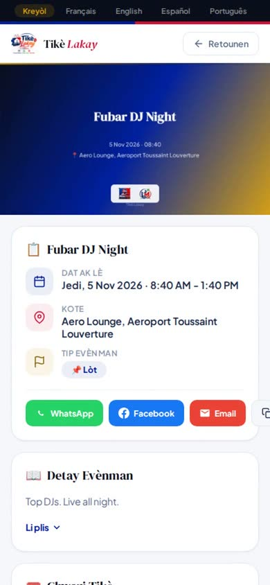
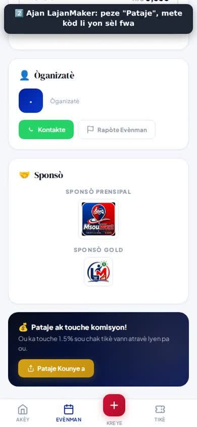
2Achte yon tikè
Pou Ajan an touche, achtè a dwe louvri evènman an ak lyen Ajan ou:
Lyen evènman an ak kòd Ajan JC-JENN7- Peze « Achte Tikè », epi chwazi 1 tikè.
- Ekri non ak nimewo telefòn moun k ap achte a.
- Gade total la: 50 HTG tikè + 4 HTG frè platfòm (7.5%) = 54 HTG. Òganizatè a resevwa 50 HTG la nèt. Se achtè a ki peye frè a.
- Make kare « VANT FINAL » la (pa gen ranbousman, sof si evènman an anile).
- Peze MonCash oswa NatCash, peye, epi tounen sou paj la.
- Tikè a parèt ak QR kòd li. Li rete tou nan tikelakay.com → Tikè, sou telefòn ki te achte l la.
⚠️ Achtè a pa dwe se ou menm. Yon Ajan pa touche komisyon sou pwòp acha pa l. Epi nimewo achtè a pa dwe deja anrejistre anba yon lòt Ajan, paske se premye Ajan ki anrejistre yon moun ki touche pou li.
Pandan demo a, ou ka montre tout etap yo jiska ekran peman an, san w pa peye.
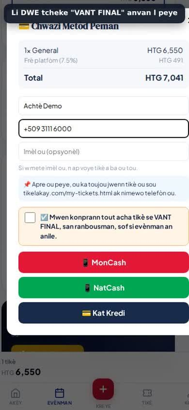
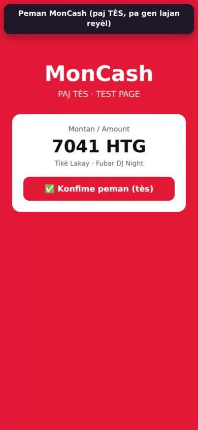
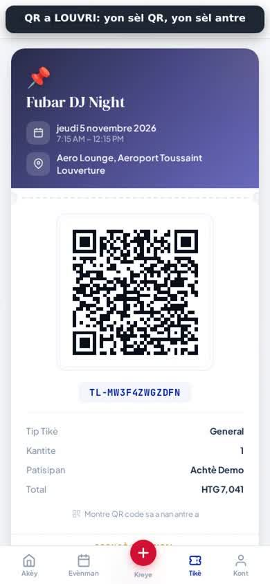
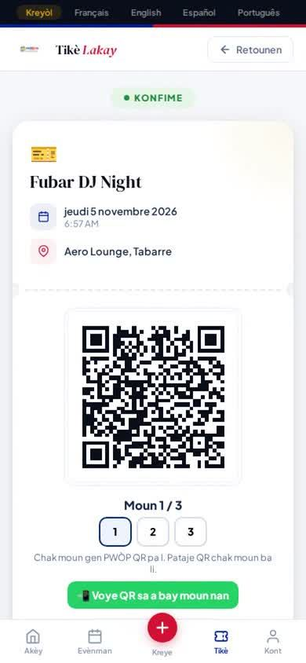
3Tablo òganizatè a: vant ak lajan
Kont → Evènman mwen kreye → 📊 Vant & moun. Oswa louvri lyen sa a, tape kòd evènman an TYNKW4, epi peze « Wè lis la »:
Tablo òganizatè evènman tès laMontre Fubar:
- Tikè vann, Lajan ou (HTG), Moun ki antre.
- Pa tip tikè: konbyen ki vann pou chak kalite tikè.
- 🚪 Kòd pòt ou: kòd pou moun k ap eskane nan pòt la (etap 4).
- Achtè yo: non, telefòn, kantite, konbyen ki deja antre.
- ⬇️ Telechaje vant yo (CSV): tout vant yo nan Excel.
- Paj la mete tèt li ajou chak 30 segonn.
Yon vrè òganizatè sèvi ak kòd evènman pa l la (li resevwa l lè l pibliye evènman an), epi li wè sèlman evènman pa l. Ou menm, ak kòd konsòl ou, ou ka louvri nenpòt evènman sou menm paj sa a.
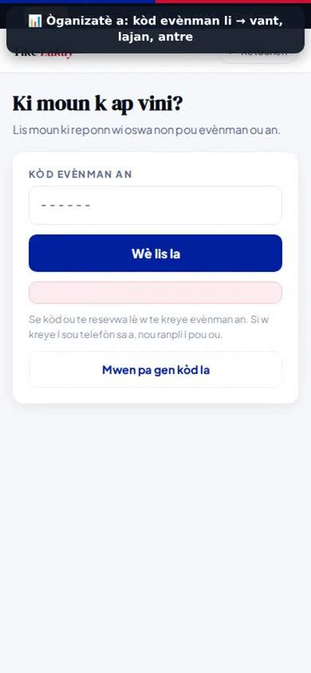
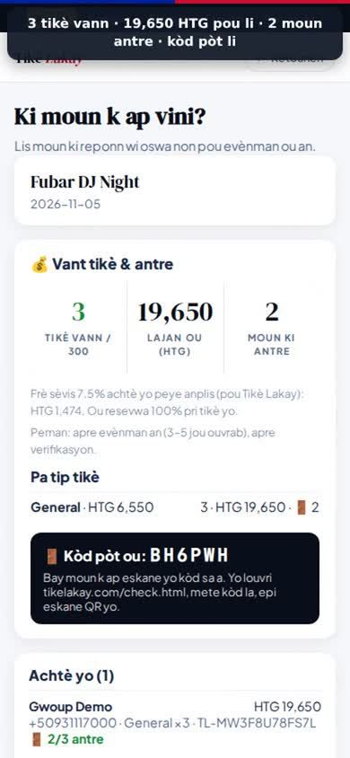
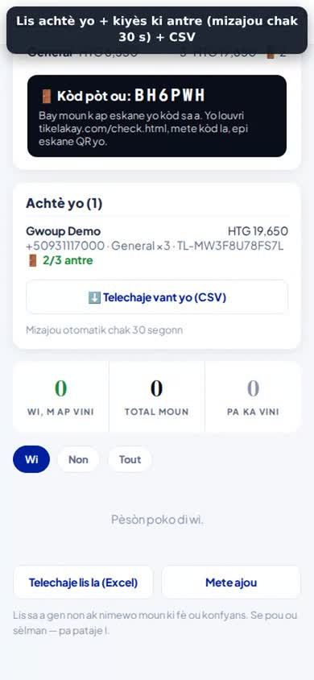
4Eskane QR kòd la nan pòt la
Sou telefòn pòt la (oswa sou telefòn ou si w gen yon sèl):
- Louvri tikelakay.com/check.html.
- Peze « Limen » (Mòd Pòt), tape kòd pòt la (li nan tablo òganizatè a, « 🚪 Kòd pòt ou »), epi peze « Louvri ». Telefòn nan sonje kòd la, ou pa bezwen tape l ankò.
- Louvri kamera telefòn nan, vize QR kòd ki sou tikè a, epi peze lyen ki parèt la.
- Vèt « BON — LI ANTRE »: moun nan ka antre.
Wouj « YO DEJA SÈVI AVÈ L »: tikè sa a te deja antre. Pa kite l antre ankò.
Si kamera a pa li QR la: tape referans tikè a (TL-…, ki ekri anba QR la) nan « Oswa antre referans lan alamen », epi peze « Verifye ».
Louvri paj pòt la (check.html)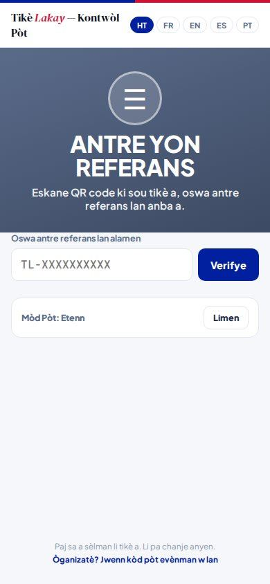
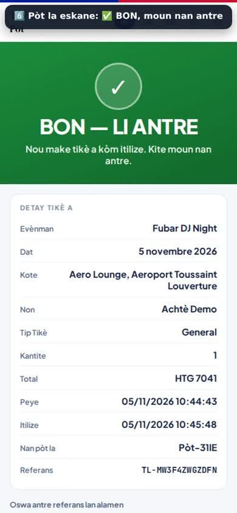
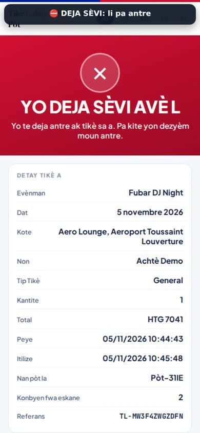
5Sponsò yo
Logo sponsò yo parèt sou paj evènman an, sou chak tikè, ak sou flyer AI yo. Nou pa janm chanje logo yo.
Pou ajoute yon sponsò (pratike l sou evènman tès la anvan demo a):
- Kont → Evènman mwen kreye → ✏️ Modifye (sou evènman tès la).
- Ale nan dènye etap la, nan « Sponsò (opsyonèl) ».
- Peze « ➕ Ajoute yon sponsò (logo) », chwazi logo a (PNG oswa JPG), ekri non an, chwazi nivo a (Prensipal, Gold…).
- Sere evènman an. Logo a parèt touswit sou paj evènman an.
Jiska 8 sponsò pou chak evènman.
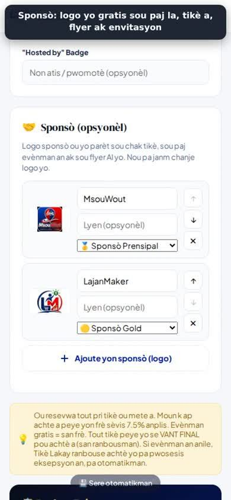
6Flyer AI yo
AI a desine 3 flyer pou evènman an (tit, dat, kote, logo, sponsò, ak yon QR kòd ki mennen moun yo achte tikè).
- Pou montre flyer ou te deja peye yo: sou menm telefòn ou te peye a, louvri tikelakay.com/flyer-ai.html.
- Anba « Flyer mwen yo », peze evènman an: 3 desen yo parèt. Ou ka telechaje yo epi pataje yo.
Pri a se 50 HTG pou kounye a (pou tès la). L ap tounen 500 HTG le pli vit ou konfime ou resevwa flyer ou yo.
Louvri Flyer AI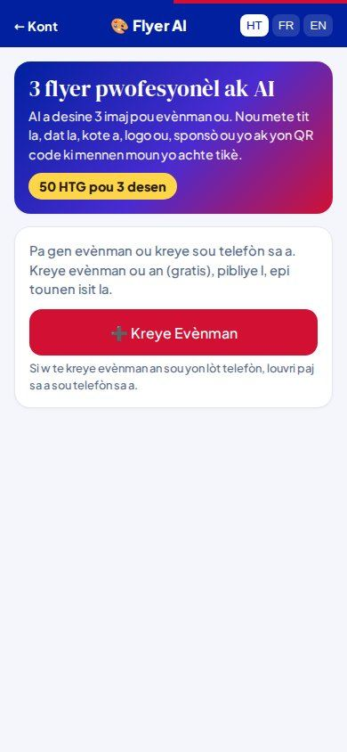
7Komisyon Ajan an (1.5%)
Lè yon moun achte ak lyen Ajan ou, Ajan an touche 1.5% pri tikè a. Sou tikè 50 HTG la: 0.75 HTG.
- Louvri haitibiznis.com/ajan-pilot.html ak kòd konsòl ou.
- Nan « Chèche yon Ajan », tape non ou (Jennifer), nimewo telefòn ou, oswa nimewo LMA ou, epi peze « Chèche ».
- Ou wè vant Tikè Lakay yo ak komisyon an.
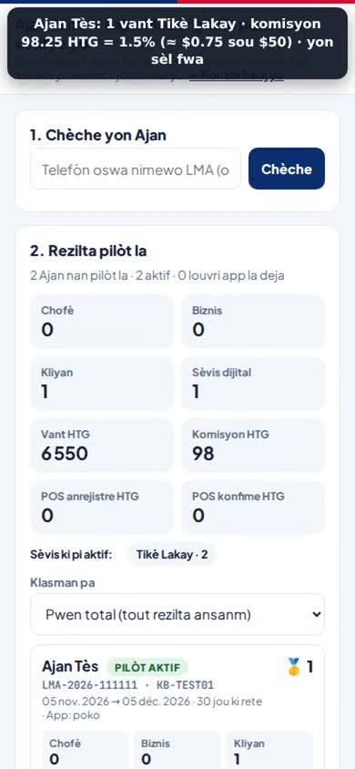
8Pataje videyo demo yo
Toujou pataje lyen sa a. Se li ki montre bon logo Tikè Lakay la sou WhatsApp:
Pataje tikelakay.com/tutorials sou WhatsApp- Louvri tikelakay.com/tutorials, chwazi lang lan (Kreyòl, Français, English, Español, Português).
- Anba chak videyo, peze « Pataje sou WhatsApp ».
- Sou WhatsApp, tann ti imaj la parèt anvan w voye l (logo Tikè Lakay, « 10 videyo · 5 lang »).
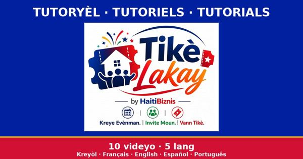
Imaj ki parèt sou WhatsApp lè w pataje lyen an.
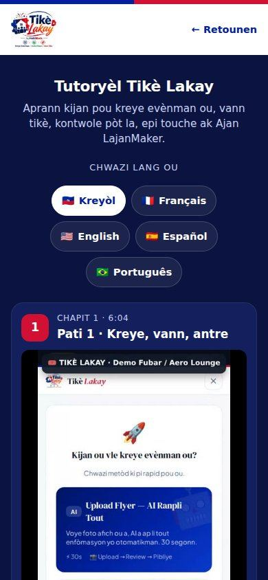
🎤 Lòd demo a pou Fubar (10 minit)
- Paj evènman an: non, dat, pri, sponsò yo (etap 1 ak 5).
- Acha: Achte Tikè → total ak frè 7.5% → VANT FINAL → MonCash/NatCash (etap 2). Òganizatè a resevwa 100% pri tikè a.
- Tikè a: QR kòd la, epi yon QR pou chak moun si se yon gwoup (etap 2).
- Pòt la: eskane → vèt BON. Eskane ankò → wouj DEJA SÈVI. Pa gen fo tikè, pa gen menm tikè 2 fwa (etap 4).
- Tablo òganizatè a: vant, lajan, moun ki antre an dirèk, lis achtè, CSV (etap 3).
- Flyer AI: 3 flyer pwofesyonèl ak sponsò yo (etap 6).
- Ajan LajanMaker: Ajan yo pataje lyen yo epi touche 1.5% (etap 7).
- Videyo yo: voye lyen tutorials la bay Fubar an 5 lang (etap 8).